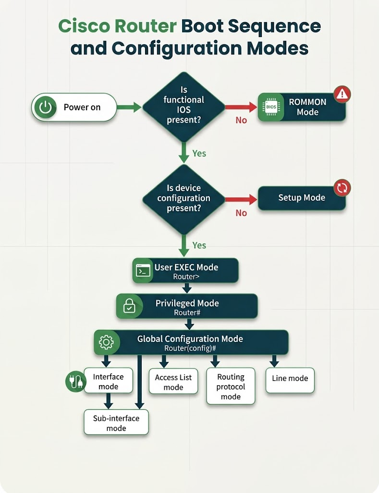

Practice
Current mode
Current modeUser EXEC
PromptRouter>
Command bar
Commands that work from the mode you're in now. Click one to place it on the command line, then press Enter.

), then Privileged mode (Router#), then Global Configuration mode (Router(config)#), which branches to Interface mode, Sub-interface mode, Access List mode, Routing protocol mode, and Line mode.">Where the console starts
Before you ever see a prompt, the router makes two checks during boot. The simulator above begins at the point where both checks pass and the router hands you a User EXEC prompt.
From there, the modes stack exactly as the chart shows: each level adds privileges, and every configuration submode branches off Global configuration.
- ROMMON
- No working IOS image was found. The router loads a minimal monitor (
rommon 1 >) used to recover or reload IOS. - Setup mode
- IOS loaded but no startup configuration exists in NVRAM, so the router offers a question-and-answer setup dialog. This is why saving with
copy running-config startup-configmatters. - Normal boot
- IOS and a configuration are both present, so the router starts at
Router>.
Command reference
| From | Command | Takes you to |
|---|---|---|
User EXEC Router> | enable | Privileged EXEC Router# |
| Privileged EXEC | disable | User EXEC |
| Privileged EXEC | configure terminal (conf t) | Global configuration Router(config)# |
| Global configuration | interface g0/0 | Interface configuration (config-if)# |
| Global configuration | interface g0/0.10 | Sub-interface configuration (config-subif)# |
| Global configuration | line console 0, line vty 0 4 | Line configuration (config-line)# |
| Global configuration | router ospf 1, router rip | Router configuration (config-router)# |
| Any configuration submode | exit | Global configuration |
| Global configuration | exit | Privileged EXEC |
| Any configuration mode | end or Ctrl+Z | Privileged EXEC |
| User or Privileged EXEC | exit / logout | Ends the session |
| Any mode | ?, sh?, show ? | Stays put and lists commands, matches, or next keywords |
| Any mode | Tab | Completes a partly typed keyword |
| Any mode | ↑ / ↓ | Recalls earlier commands (see show history) |